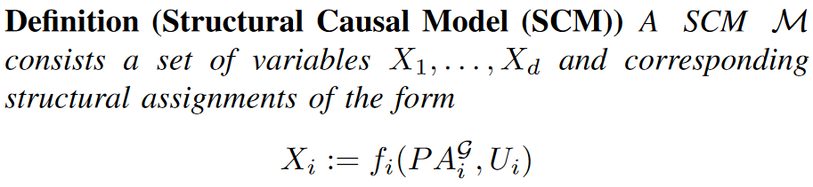
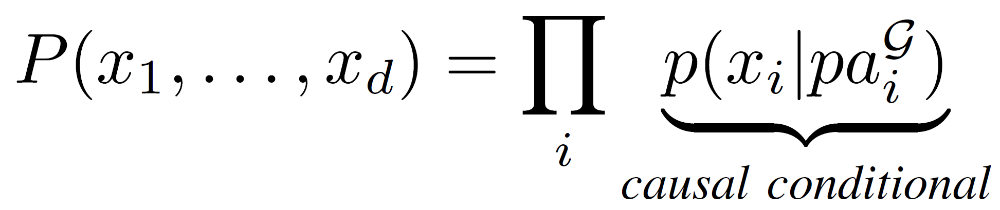

Dataflow graphs as complete causal graphs
Andrei Paleyes Computer Lab University of Cambridge
CAIN 2023
Hello! My name is Andrei, I am PhD student at the Computer Lab of the University of Cambridge, and I am very excited to be a part of CAIN 2023.
Dataflow graphs as complete causal graphs
Andrei Neil Siyuan Bernhard
The work I am presenting is titled "Dataflow graphs as complete causal graphs", and is done together with my supervisor Neil Lawrence, as well as Siyuan Guo and Bernhard Shoelkopf from Max Plank Institute in Tuebingen.
Bridging areas
“The main obstacle that we see for the application of statistical causal inference methods is to obtain a causal graphical model and the corresponding observational data.”
"Applications of statistical causal inference in software engineering" , Siebert, 2022
“The enterprise of “causal discovery” aims to extract causal conclusions from observationally inferred conditional independencies. However it can not do so without making (explicitly or, more often, implicitly) strong causal assumptions—which may rest unjustified, so invalidating the process.”
"Beware of the DAG!" , Dawid, 2008
This is a vision, forward looking work in which we point out possible connection between dataflow architecture and causal inference. If this vision is to be realized, it should make not one but two communities happy. Software engineers shall benefit from software that is better understood. Causality enthusiasts shall like the fact that there is no need to discover the underlying DAG. Let's dive deeper.
What is dataflow architecture?
Data flow schemas , Dennis, J. B., Fosseen, J. B., & Linderman, J. P., International Symposium on Theoretical Programming (pp. 187-216), 1974
We shall start by briefly explaining necessary background. Our work is centered around dataflow software architecture. Dataflow originated in 1970s with the works of Jack Dennis, Arvind and Paul Morrison. Perhaps the earliest famous example of dataflow is Map Reduce algorithm proposed for big data processing in 2008. Nowadays its a bit better known thanks to such projects as Tensorflow and Node-RED. Nevertheless, dataflow still remains relatively niche.
Dataflow vs control flow
Control flow is about operations and their order
Dataflow is about data routes and transformations
The original purpose was to create a paradigm more suitable for parallel processing than the classic control flow aka von Neumann architecture. A good way understand these paradigms is by contrasting them. In control flow, aka von Neumann architecture, instructions are executed one by one in a specific order. In dataflow instructions are executed as soon as all their inputs are available. We can also say that dataflow is concerned with data, its routes and transformations, while control flow is concerned with the possible order of operations.
Dataflow features
There are two features of dataflow that are of utmost importance for modern systems. First is data coupling, thanks to which this paradigm is strongly data oriented, as the name suggests. Which is great, because as we all know, ML models are impossible to build without access to data. Second is the dataflow graph. Crucially, in this paradigm dataflow graph is produced as a natural part of the software design process, which means this graph is complete by design. There are no hidden data sources or processing side effects.
Causality
Causality if an area of science that aims to characterize causal relationships from observational data. Current statistical methods exploit associative relationships, but correlation between two features does not imply causation. Discovery and estimation of causal relationship is what causality aims to address. Lately it became one of the mainstream parts of the modern machine learning research agenda.
Causal language
Structured causal model

We shall highlight two key notions in the causal language. First is the structured causal model - a set of parent-child assignments with direct causes. You can immediatelly see analogies with a dataflow graph. Second is the intervention - act of affecting the system to change its outcome, often denoted using a do operator. In software engineering context this can be a software update, input data shift, or a bug.
Dataflow graph = causal graph

One of key bottlenecks of causal reasoning methods is their reliance on a causal graph for inference tasks. In our work we put forth an observation that the dataflow graph generated as a part of the dataflow architectured software design process can be seen and used as complete causal graph of the entire software system. "complete" is the key, as it eliminates the main problem of using causal inference. In the paper we propose an algorthim that models software components as causal conditionals and measures their downstream causal effects.
Applications
Business analysis
And this opens up all sorts of possibilities.
We can use causal inference to track down fauls and bugs in a dataflow system.
We can track data shifts back to the input data nodes of the dataflow system, and measure their influence on the change in the business metrics.
We can use causal inference to estimate possible influence of the proposed update of a software component in a dataflow system, reducing the need for expensive live experiments, such as A/B testing.
We can automate these processes, as we can manipulate, traverse and inspect the complete graph at any node or link. Simple examples of some of these applications are provided in the paper.
Open questions
Scalability
Costs
Tech stack
Ops
Of course there are many open questions and unknowns, such as scalability of causal methods, data storage demands and costs, technology stacks, operational maintenance practices. Nevertheless, they are certainly solvable, just as the community was able to figure this out for service-oriented architecture.
Intellectual debt
Intellectual Debt: With Great Power Comes Great Ignorance. Zittrain, Jonathan. 2019. Medium: Berkman Klein Center Collection
I'd like to close with the following note. As software engineers, we are all aware of a notion of technical debt. Those of us how had to support old production systems are painfully aware of it. But as our software becomes more complex, and includes more sophisticated components such as ML models, a notion of intellectual debt arises. This notion, proposed by Jonathan Zittrain, suggests that the more complex our systems become, the less we are able to explain and understand what they are doing. That is disturbing, and we shall be seeking ways to build AI systems that are more, not less, understandable. We believe that building systems with dataflow paradigm and applying causal inference to them gives us an excellent opprotunity to create software that is explainable by design. As a result we shall be able to build more interpretable and transparent systems, including those powered by AI.